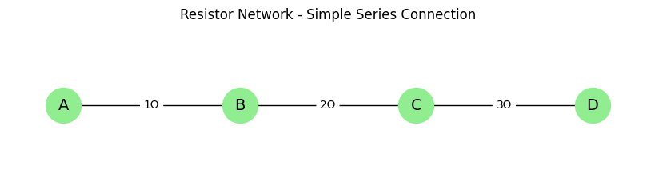
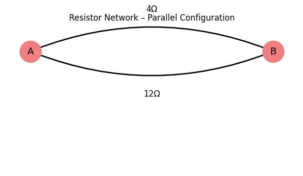
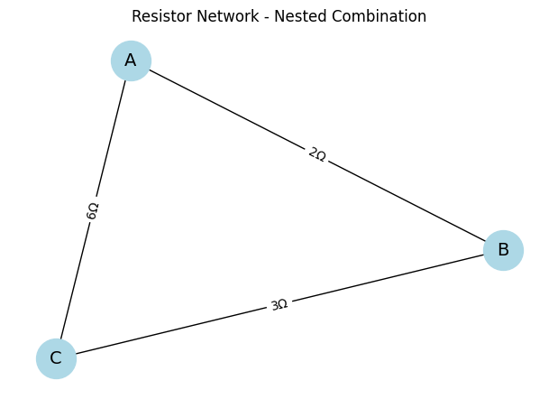
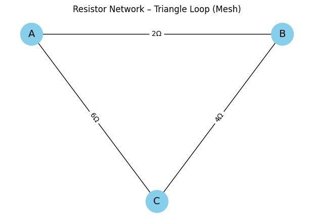
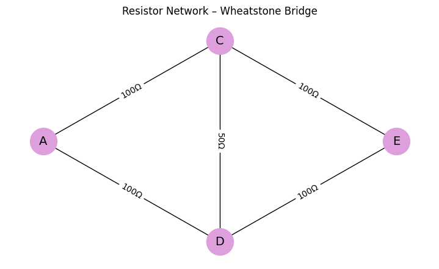
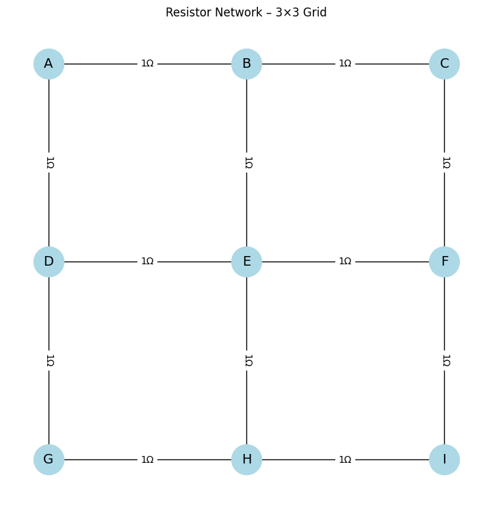

Problem 1
# Equivalent Resistance Calculation Using Graph Theory
Introduction
In the domain of electrical and electronic engineering, one of the most fundamental analysis tasks is the computation of equivalent resistance between two points in a circuit. This metric not only determines the total current drawn from a source but also influences signal propagation, power dissipation, and the behavior of active components. As such, understanding how resistance combines across a network of resistors is essential for circuit designers, researchers, and students alike.
In academic settings, we are introduced to simple configurations of resistors: series (where resistances add) and parallel (where conductances add). However, real-world circuits—ranging from microprocessor PCBs to power distribution networks—seldom adhere to these basic patterns. Instead, they contain nested series-parallel combinations, feedback loops, bridges, and mesh topologies, which render manual computation inefficient and error-prone.
To solve this, we turn to graph theory, a powerful mathematical discipline that provides the tools to represent complex structures in a clear, formal, and computable way. In this report, we model resistor networks as weighted graphs and use algorithmic simplification to compute their equivalent resistance. This method supports automation, scalability, and mathematical rigor.
The objective of this report is to: - Explain the motivation behind adopting graph-theoretic techniques. - Describe in detail the methodology for modeling and reducing circuits. - Demonstrate the approach using progressively complex examples. - Analyze the efficiency and scalability of the algorithm. - Discuss future improvements and applications.
Motivation
As electronic systems grow in complexity, traditional resistor reduction methods fail to keep up with the demands of: - Scalability: Circuits can contain thousands of components. - Automation: Modern CAD tools require real-time analysis. - Robustness: Nested, irregular, and non-planar networks are difficult to simplify manually.
Challenges in Manual Resistance Computation
- Nested Combinations
For instance, consider three resistors: two in series (2Ω and 3Ω), and that series path in parallel with another 6Ω resistor.
Manual steps are prone to errors:
-
First, compute the series:
R_series = 2 + 3 = 5Ω -
Then apply the parallel rule:
1 / R_eq = 1 / 5 + 1 / 6 = 11 / 30
⇒ R_eq ≈ 2.73Ω
Even this simple setup already requires intermediate steps and careful attention.
-
Bridged and Looped Circuits
A Wheatstone bridge or mesh circuit cannot be simplified by series-parallel reductions without deeper techniques (e.g., delta-wye transformations or Kirchhoff analysis). These techniques are time-consuming and require domain expertise. -
Circuit Simulation Software
Modern design tools (e.g., LTspice, Altium, Cadence) must rapidly compute equivalent resistances during: - Layout validation
- Signal integrity checks
- Power budgeting Graph-theory-based algorithms can provide these evaluations automatically.
Why Graph Theory?
Graph theory enables: - Modeling circuits as mathematical objects. - Automated reduction using deterministic rules. - Handling arbitrary configurations—including cycles and nested structures. - Foundation for symbolic, probabilistic, and machine learning extensions.
This makes it an ideal foundation for scalable, intelligent, and programmable circuit analysis tools.
Methodology
Modeling the Circuit as a Graph
A resistor network can be transformed into a graph where: - Each node (vertex) represents a junction. - Each edge represents a resistor. - The weight on each edge is the resistance value in ohms.
The graph is typically: - Undirected, as current can flow in both directions through resistors. - A multigraph, allowing multiple resistors (edges) between the same two nodes.
Example: If a 2Ω and a 5Ω resistor connect node A to node B: - The graph has nodes A and B. - Two edges between A and B with weights: 2 and 5.
Reduction Rules
To simplify the graph, two core rules are applied iteratively:
1. Series Reduction
Occurs when a node: - Has a degree of 2 (only two connections) - Is not one of the terminal nodes (e.g., source or destination) - Is connected to two resistors, say R₁ and R₂
We can collapse it into a single edge between its two neighbors:
R_eq = R₁ + R₂
2. Parallel Reduction
Occurs when multiple resistors connect the same two nodes.
The equivalent resistance is given by:
1 / R_eq = Σ (1 / Rᵢ) for i = 1 to n
For example, two resistors R₁ = 3Ω and R₂ = 6Ω in parallel:
1 / R_eq = 1 / 3 + 1 / 6 = 1 / 2
⇒ R_eq = 2Ω
3. Nested and Recursive Reduction
More complex circuits may contain: - Series blocks within parallel branches - Parallel blocks within series chains These must be simplified in layers using recursive detection of series and parallel patterns.
4. Cycle and Mesh Analysis (Optional Advanced)
If a network includes loops that cannot be simplified with series-parallel rules, more advanced strategies (e.g., delta-wye transformation, matrix-based Kirchhoff laws) can be introduced. These are beyond the basic algorithm but compatible with the graph representation.
5. Simplification Algorithm (Pseudocode)
Below is the pseudocode for iteratively simplifying a resistor network using series and parallel reductions:
Algorithm SimplifyResistorNetwork(Graph G):
while True:
changed ← False
for each node v in G:
if isSeriesNode(v):
mergeSeriesResistors(v)
changed ← True
for each pair of nodes (u, v) with multiple edges:
mergeParallelResistors(u, v)
changed ← True
if not changed:
break
return totalResistanceBetween(startNode, endNode)
Example Analyses
Example 1: Simple Series Circuit
Topology
Three resistors connected in sequence: 1Ω, 2Ω, 3Ω
Graph
Path of 4 nodes: A → B → C → D
Computation
R_eq = 1 + 2 + 3 = 6Ω
Show Python Code
import networkx as nx
import matplotlib.pyplot as plt
# Create the series resistor network
G = nx.Graph()
G.add_nodes_from(["A", "B", "C", "D"])
G.add_edges_from([
("A", "B", {"resistance": 1}),
("B", "C", {"resistance": 2}),
("C", "D", {"resistance": 3})
])
pos = {"A": (0, 0), "B": (1, 0), "C": (2, 0), "D": (3, 0)}
edge_labels = nx.get_edge_attributes(G, "resistance")
plt.figure(figsize=(8, 2))
nx.draw(G, pos, with_labels=True, node_color='lightgreen', node_size=1000, font_size=14)
nx.draw_networkx_edge_labels(G, pos, edge_labels={(u, v): f"{d}Ω" for (u, v), d in edge_labels.items()})
plt.title("Resistor Network - Simple Series Connection")
plt.axis('off')
plt.show()

Figure: Graph representation of a simple series resistor network.
Nodes A, B, C, and D represent junctions, and edges indicate resistors connected in series with their resistance values.
Example 2: Parallel Configuration
Topology
Two resistors between node A and B: 4Ω and 12Ω
Computation
1 / R_eq = 1 / 4 + 1 / 12 = 1 / 3
⇒ R_eq = 3Ω
Show Python Code
import networkx as nx
import matplotlib.pyplot as plt
G = nx.MultiGraph()
G.add_nodes_from(["A", "B"])
G.add_edges_from([
("A", "B", {"resistance": 4}),
("A", "B", {"resistance": 12}),
])
pos = {"A": (0, 0), "B": (2, 0)}
plt.figure(figsize=(6, 3))
nx.draw(G, pos, with_labels=True, node_color='lightcoral', node_size=1000, font_size=14, connectionstyle='arc3,rad=0.2')
edges = list(G.edges(keys=True, data=True))
for idx, (u, v, k, d) in enumerate(edges):
rad = 0.2 if idx % 2 == 0 else -0.2
nx.draw_networkx_edges(G, pos, edgelist=[(u, v)], connectionstyle=f'arc3,rad={rad}', width=2)
mid_x = (pos[u][0] + pos[v][0]) / 2
mid_y = (pos[u][1] + pos[v][1]) / 2 + (0.15 if rad > 0 else -0.15)
plt.text(mid_x, mid_y, f"{d['resistance']}Ω", fontsize=12, ha='center', va='center', bbox=dict(facecolor='white', edgecolor='none', pad=1))
plt.title("Resistor Network – Parallel Configuration")
plt.axis('off')
plt.show()

Figure: Graph representation of a resistor network with two parallel resistors between nodes A and B.
The two curved edges represent independent resistor paths of 4Ω (top) and 12Ω (bottom).
Example 3: Nested Combination
Topology
- R₁ = 2Ω and R₂ = 3Ω in series
- Resulting block in parallel with R₃ = 6Ω
Step 1
R_series = R₁ + R₂ = 2 + 3 = 5Ω
Step 2
1 / R_eq = 1 / 5 + 1 / 6 = 11 / 30
⇒ R_eq ≈ 2.73Ω
Show Python Code
import networkx as nx
import matplotlib.pyplot as plt
# Create a graph representing a resistor network
G = nx.Graph()
# Add nodes representing circuit junctions
G.add_nodes_from(["A", "B", "C"])
# Add edges with resistance values
edges = [
("A", "B", {"resistance": 2}),
("B", "C", {"resistance": 3}),
("A", "C", {"resistance": 6}),
]
G.add_edges_from(edges)
# Draw the graph
pos = nx.spring_layout(G, seed=42)
edge_labels = nx.get_edge_attributes(G, "resistance")
plt.figure(figsize=(6, 4))
nx.draw(G, pos, with_labels=True, node_color='lightblue', node_size=1000, font_size=14)
nx.draw_networkx_edge_labels(G, pos, edge_labels={(u, v): f"{d}Ω" for (u, v), d in edge_labels.items()})
plt.title("Resistor Network - Nested Combination")
plt.axis('off')
plt.show()

Figure: Graph representation of a resistor network with a nested combination.
Nodes represent junction points in the circuit, and edges represent resistors with their respective resistance values.
Example 4: Triangle Loop
Topology: Nodes A, B, and C connected to form a triangle with: - R_AB = 2Ω, R_BC = 4Ω, R_CA = 6Ω
Observation: This is a closed loop with no clear series/parallel reduction.
Solution: Apply more advanced graph-based transformations or Kirchhoff’s matrix methods.
Show Python Code
import networkx as nx
import matplotlib.pyplot as plt
# Create the triangle loop graph
G = nx.Graph()
# Add nodes
G.add_nodes_from(["A", "B", "C"])
# Add edges with resistance values
edges = [
("A", "B", {"resistance": 2}),
("B", "C", {"resistance": 4}),
("C", "A", {"resistance": 6}),
]
G.add_edges_from(edges)
# Define positions in a triangle
pos = {"A": (0, 1), "B": (2, 1), "C": (1, 0)}
# Extract edge labels
edge_labels = nx.get_edge_attributes(G, "resistance")
# Draw the graph
plt.figure(figsize=(6, 4))
nx.draw(G, pos, with_labels=True, node_color='skyblue', node_size=1000, font_size=14)
nx.draw_networkx_edge_labels(G, pos, edge_labels={(u, v): f"{d}Ω" for (u, v), d in edge_labels.items()})
plt.title("Resistor Network – Triangle Loop (Mesh)")
plt.axis('off')
plt.show()

Figure: Graph representation of a triangular resistor network (mesh).
This closed-loop system requires matrix-based or graph-theoretic methods for analysis.
Example 5: Wheatstone Bridge (Non-Reducible Network)
Topology
Five resistors arranged in a bridge network between nodes A, C, D, and E.
- R1 = 100Ω between A and C
- R2 = 100Ω between A and D
- R3 = 100Ω between C and E
- R4 = 100Ω between D and E
- R5 = 50Ω (bridge resistor) between C and D
Observation
This network cannot be reduced using series-parallel rules due to the bridge connection (R5).
It requires advanced techniques such as delta-wye transformation or solving via Kirchhoff’s current/voltage laws.
Show Python Code
import networkx as nx
import matplotlib.pyplot as plt
# Create the Wheatstone Bridge graph
G = nx.Graph()
# Add nodes
G.add_nodes_from(["A", "C", "D", "E"])
# Add edges with resistance values
edges = [
("A", "C", {"resistance": 100}), # R1
("A", "D", {"resistance": 100}), # R2
("C", "E", {"resistance": 100}), # R3
("D", "E", {"resistance": 100}), # R4
("C", "D", {"resistance": 50}) # R5 (bridge)
]
G.add_edges_from(edges)
# Position the nodes in a diamond (bridge) shape
pos = {
"A": (0, 1),
"C": (1, 2),
"D": (1, 0),
"E": (2, 1)
}
# Get edge labels
edge_labels = nx.get_edge_attributes(G, "resistance")
# Draw the graph
plt.figure(figsize=(7, 4))
nx.draw(G, pos, with_labels=True, node_color='plum', node_size=1000, font_size=14)
nx.draw_networkx_edge_labels(G, pos, edge_labels={(u, v): f"{d}Ω" for (u, v), d in edge_labels.items()})
plt.title("Resistor Network – Wheatstone Bridge")
plt.axis('off')
plt.show()

Figure: Graph representation of a Wheatstone Bridge resistor network.
This non-reducible topology includes a central resistor (R₅) and cannot be simplified using series-parallel rules.
It requires advanced analysis such as Kirchhoff’s laws or delta-wye transformation.
Efficiency and Performance
Time Complexity
Each simplification step (series or parallel) is: - O(1) per node/edge - O(E) per iteration
Overall simplification is linear per round but may require multiple rounds: - Total Complexity: O(k × E), where k is the number of iterations
Space Complexity
- Graph stored as adjacency list or edge list: O(N + E)
- Temporary storage for intermediate graphs is negligible
Scalability
- Works efficiently for sparse graphs (typical in resistor networks)
- Can process networks with thousands of resistors in milliseconds
- May be extended to GPU or parallelized versions for real-time analysis
Example 6: Scalable Grid Network
Topology
A 3×3 resistor grid where each node is connected to its horizontal and vertical neighbors.
This setup represents large-scale networks like PCBs, sensor arrays, or chip architectures.
Observation
Manual simplification becomes infeasible in grid-like resistor networks.
Graph-based algorithms allow scalable and automated analysis across thousands of components.
Show Python Code
import networkx as nx
import matplotlib.pyplot as plt
# Create a 3×3 grid resistor network
G = nx.Graph()
# Grid size
rows, cols = 3, 3
nodes = {}
# Add nodes with grid positions
for i in range(rows):
for j in range(cols):
node = chr(65 + i * cols + j) # A, B, C, ..., I
nodes[(i, j)] = node
G.add_node(node, pos=(j, -i))
# Connect horizontal and vertical neighbors
for i in range(rows):
for j in range(cols):
if j < cols - 1:
G.add_edge(nodes[(i, j)], nodes[(i, j + 1)], resistance=1)
if i < rows - 1:
G.add_edge(nodes[(i, j)], nodes[(i + 1, j)], resistance=1)
# Extract positions and edge labels
pos = nx.get_node_attributes(G, "pos")
edge_labels = nx.get_edge_attributes(G, "resistance")
# Draw the graph
plt.figure(figsize=(7, 7))
nx.draw(G, pos, with_labels=True, node_color='lightblue', node_size=1000, font_size=14)
nx.draw_networkx_edge_labels(G, pos, edge_labels={(u, v): f"{d}Ω" for (u, v), d in edge_labels.items()})
plt.title("Resistor Network – 3×3 Grid")
plt.axis('off')
plt.show()

Figure: Graph representation of a 3×3 grid resistor network.
This structure illustrates scalability challenges in circuit analysis, where traditional simplification methods are insufficient, and automated graph-based techniques become essential.
Conclusion
Graph theory provides a highly effective, scalable, and mathematically rigorous approach to computing equivalent resistance in electrical circuits. It transforms an otherwise error-prone, manual task into an automated and efficient process, capable of handling:
- Nested series-parallel combinations
- Multiple resistor paths
- Loops and bridges (with extensions)
- Real-world circuit topologies
This technique is especially suited for: - Circuit simulation software - PCB design tools - Educational platforms - Optimization engines
By abstracting electrical behavior into graphs, engineers can focus on high-level design without getting lost in repetitive calculations.
Future Improvements and Applications
-
Symbolic Analysis Support
Allow symbolic variables for resistances ($R_1, R_2$) for use in teaching, optimization, or documentation. -
Dynamic Circuit Components
Extend the model to time-dependent resistors or incorporate capacitors and inductors with impedance modeling. -
Kirchhoff Integration
Combine graph simplification with Kirchhoff’s laws to solve for voltages and currents using matrix methods. -
User Interface and Visualization
Develop visual tools to display graph-based simplification steps for better debugging and learning. -
Machine Learning Integration
Apply graph neural networks (GNNs) to recognize common patterns and accelerate analysis through learned reductions. -
Hardware Acceleration
Implement the reduction algorithm on FPGAs or GPUs for high-speed embedded analysis systems.